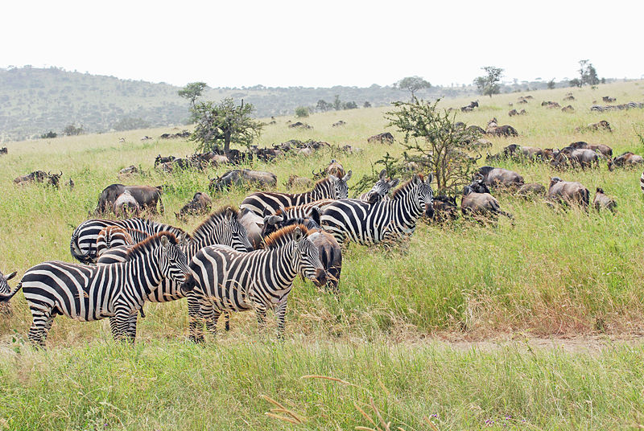
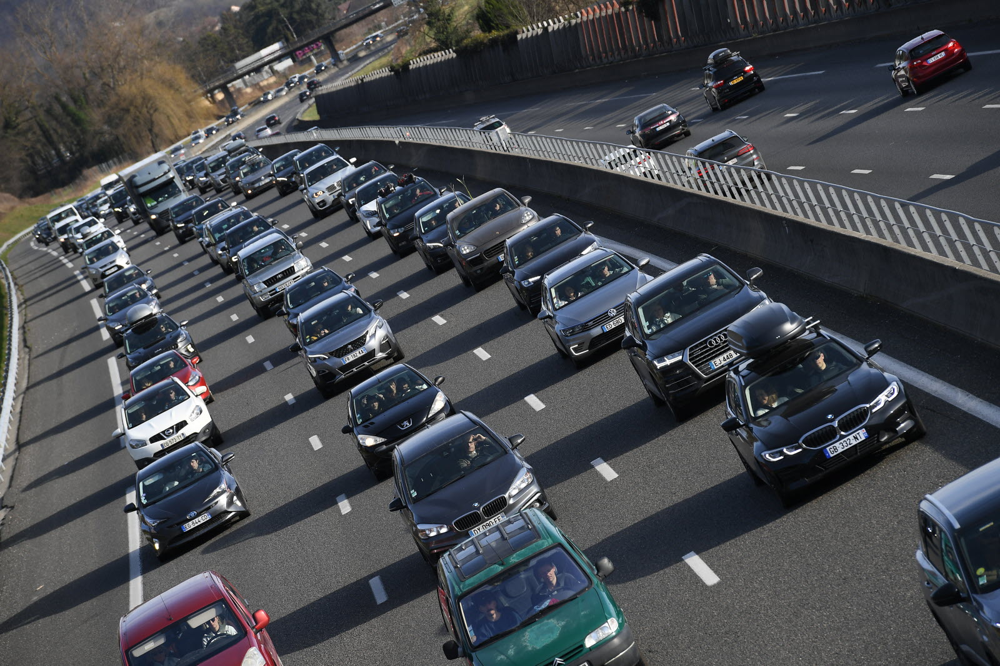
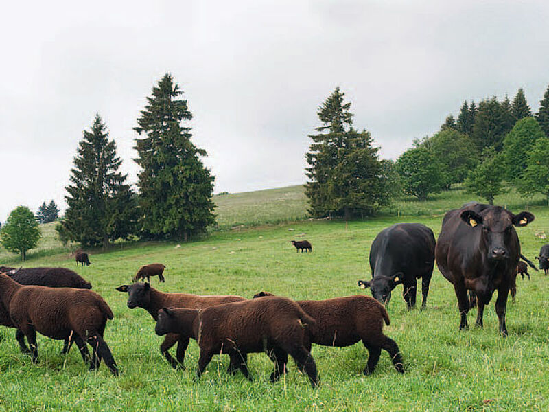

Vision appliquée pour la Robotique
Majeure ROBIA/ module IA Vision
LONCHAMBON Alexis - 5IRC
Prise en main de Tensorflow
1.a Expliquer la différence entre la classification d’image, la détection d’image la segmentation d’images
La classification d'images permet d'identifier une simple image et de la ranger dans une classe définie parmis une liste de classes.
La détection d'images permet d'identifier la présence d'un ou plusieurs objets de différentes classes dans une image.
La segmentation d'image pousse un peu plus loin la détection en ajoutant aussi où se trouve l'objet identifié précisément, quels pixels correspondent a l'objet.
1.b Quelles sont les grandes solutions de détection d’objets ( voir par exemple How SSD Works )
Voici une liste de solutions :
On s’intéresse à l’exemple suivant
(Attention pour une raison curieuse si le code ne marche pas, une solution peut etre d’utiliser une autre version de object_detection, en ajoutant par exemple une cellule avant le moment qui pose problème !pip install object_detection==0.0.3)
2.a Quelles sont les classes reconnues par le réseau ?
Les classes sont dans le fichier mscoco_label_map.pbtxt :
| person | bicycle | car | motorcycle | airplane |
| bus | train | truck | boat | traffic light |
| fire hydrant | stop sign | parking meter | bench | bird |
| cat | dog | horse | sheep | cow |
| elephant | bear | zebra | giraffe | backpack |
| umbrella | handbag | tie | suitcase | frisbee |
| skis | snowboard | sports ball | kite | baseball bat |
| baseball glove | skateboard | surfboard | tennis racket | bottle |
| wine glass | cup | fork | knife | spoon |
| bowl | banana | apple | sandwich | orange |
| broccoli | carrot | hot dog | pizza | donut |
| cake | chair | couch | potted plant | bed |
| dining table | toilet | tv | laptop | mouse |
| remote | keyboard | cell phone | microwave | oven |
| toaster | sink | refrigerator | book | clock |
| vase | scissors | teddy bear | hair drier | toothbrush |
2.b Quelle partie du code correspond au chargement du modèle de réseau.Quelles sont les modèles proposés
La sélection du modele est dans la catégorie Model Selection. On y charge les modeles depuis le TensorFlow Hub.
On retrouve les modeles suivants :
2.c Quelles sont les structures des modèles de réseaux sous jacents ?
| Model | Network |
|---|---|
| CenterNet HourGlass |  For the case of the CenterNet with Hourglass backbone, the stacked Hourglass Network downsamples the input by 4×, followed by two sequential hourglass modules. Each hourglass module is made up of a uniform chain of 5-layer down- and up-convolutional network with skip connections. No changes were made in this network. For the case of the CenterNet with Hourglass backbone, the stacked Hourglass Network downsamples the input by 4×, followed by two sequential hourglass modules. Each hourglass module is made up of a uniform chain of 5-layer down- and up-convolutional network with skip connections. No changes were made in this network. |
| CenterNet ResNet |  Standard ResNet modules are augmented with three transposed convolutional networks to incorporate higher resolution outputs. Some modifications are by reducing the output filters of upsampling layers to 256, 128, and 64 respectively for computational reduction. The addition of a 3X3 deformable convolutional layer between each upsampling layers helped to get decent results on some standard datasets. Standard ResNet modules are augmented with three transposed convolutional networks to incorporate higher resolution outputs. Some modifications are by reducing the output filters of upsampling layers to 256, 128, and 64 respectively for computational reduction. The addition of a 3X3 deformable convolutional layer between each upsampling layers helped to get decent results on some standard datasets. |
| EfficientNet |  SDD Avec EfficientNet SDD Avec EfficientNet |
| SSD ResNet |  RetinaNet RetinaNet |
| SSD MobileNet |  |
| Faster R-CNN |  |
| Mask R-CNN |  Mask R-CNN with Inception Resnet v2 Mask R-CNN with Inception Resnet v2 |
2.d Tester sur une douzaine d’images de votre choix (Essayer sur des images contenant le plus de classes possibles reconnus) et faites un tableau comparatif
| Original Image | CenterNet HourGlass104 | CenterNet ResNet101 | EfficientDet D4 | SSD MobileNet v1 FPN | SSD ResNet101 FPN | Faster R-CNN | Mask R-CNN |
|---|---|---|---|---|---|---|---|
|  |  |
 |
 |
 |
 |
||
 |
 |
 |
 |
 |
|||
 |
 |
 |
 |
 |
|||
 |
 |
 |
 |
 |
|||
|  |  |
 |
 |
 |
|||
|  |  |
 |
 |
 |
|||
 |
 |
3.a A quoi sert Tensorflow Hub, et y a t il des solutions équivalentes ?
Stocker les modeles en ligne
Note : TensorflowHub migre sur Kaggle a partir du 15 Novembre
3.b Combien trouve t’on sur tensorflow hub de réseaux de detection d’objets ?
On a 101 modeles pour l'Object Detection. Parmi ceux la :
3.c Quelles sont les architectures de ces réseaux ?
On a entre autres :
3.d Quelles sont les classes reconnues ?
La plupart utilisent COCO 2017 et l'autre majorité CPPE5
3.e Y a-t-il des exemples pour gérer une phase d’apprentissage ?
Custom ConvNets (Kaggle)
TF2 Custom Object Detection Model Tutorial